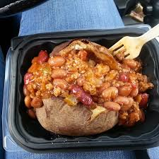

back
chapter 1: special chicken sandwiches
spicy chicken sandwich
details about spicy chicken sandwich

There are 450 calories in a 1 sandwich serving of Wendy's Spicy Chicken Sandwich. Calorie Breakdown: 37% fat, 42% carbs, 22% prot.
homestyle chicken sandwich
details of homestyle chicken

There are 500 calories in a 1 sandwich serving of Wendy's Homestyle Chicken Sandwich.
Calorie Breakdown: 38% fat, 39% carbs, 23% prot.
grill chicken sandwich
details of grill chicken

Wendy's Ultimate Chicken Grill Sandwich boasts only 390 calories, 10 g fat, 4 g saturated fat, and 1,080 mg of sodium.
This simple yet satisfying sandwich of grilled chicken, lettuce, and tomato is topped off with tangy honey mustard instead of
slathered with high-fat mayo -- for a dietitian's delight.
chapter 2: delicious chicken wrap
spicy chicken wraps
nutrional summary of spicy wrap

There are 340 calories in a 1 wrap serving of Wendy's Spicy Chicken Go Wrap. Calorie Breakdown: 43% fat, 37% carbs, 20% prot.
homestyle wrap
nutrional summary homestyle wrap

There are 320 calories in a 1 wrap serving of Wendy's Homestyle Chicken Go Wrap. Nutrition Facts. Serving Size, 1 wrap (126g). Amount Per .
grill chicken wrap
nutrional value of grill wrap

260 calories
There are 260 calories in a 1 wrap serving of Wendy's Grilled Chicken Go Wrap. Calorie breakdown: 34% fat, 38% carbs, 29% protein.
chapter 3: wendy's baked potatoes
Wendy's Sour Cream & Chive Baked Potato
nutrional summary

There are 310 calories in 1 side of Wendy's Sour Cream & Chive Baked Potato. You'd need to walk 86 minutes to burn 310 calories. Visit CalorieKing to see ...
Carbs: 63 g
Protein: 8 g
Fat: 2.5 g
Bacon & Cheese Baked Potato
nutrional summary

There are 540 calories in a Bacon & Cheese Baked Potato from Wendy's. Most of those calories come from fat (37%) and carbohydrates (47%).
Chili & Cheese Baked Potato
nutrional summary

Calories in Wendy's Chili & Cheese Baked Potato and Nutrition Facts. There are 460 calories in a 1 potato serving of Wendy's Chili & Cheese Baked Potato.